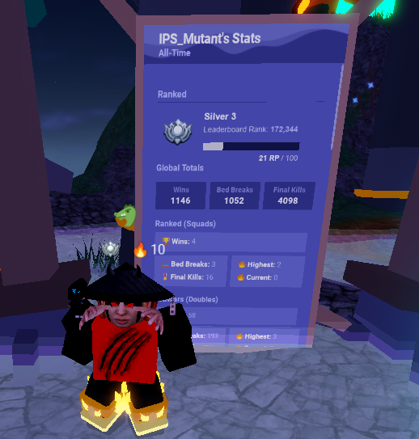

Places Must Visit
Six Flags America
i had visited in July 2022
Six Flags America is a theme park located in the Woodmore CDP of Prince George's County, Maryland, near Upper Marlboro, and in the Washington, DC metropolitan area. Founded as a wildlife center in 1973 by Ross Perot, ABC television operated the park as a drive-through safari called The Largo Wildlife Preserve beginning in 1974 until its closure in 1978. The property was bought by Jim Fowler's Wild Kingdom; thereafter the site was gradually converted from a wildlife preserve into a theme park named Wild World. In 1992, the park was renamed Adventure World after being acquired by Premier Parks, and ultimately was branded as the 10th Six Flags park when Premier Parks acquired Six Flags Inc. and adopted its name in 1999. The "America" in the park's name was chosen due to the park's proximity to the U.S. capital.
Sea World San Diego
i had visited in August 2017
SeaWorld San Diego is an animal theme park, oceanarium, outside aquarium and marine mammal park, in San Diego, California, United States, inside Mission Bay Park. It is owned and operated by SeaWorld Parks & Entertainment. SeaWorld San Diego is a member of the Association of Zoos and Aquariums (AZA). Adjacent to the property is the Hubbs-SeaWorld Research Institute, which conducts research on marine biology and provides education and outreach on marine issues to the general public, including information in park exhibits.
Review On The Movies

Exellent film to culminate MCU ride
Firstly, the Russo brothers show deep appreciation for the MCU and the effort they put in for this film is visible with so many awesomely-handled pivotal moments in the film’s plot. It seems that many of the MCU’s best films are directed by Anthony and Joe Russo and that doesn’t surprise me one bit. Compared to many MCU films, the acting in this film is phenomenal. Everyone in the cast deeply cares for this film and you can tell that they all understand the significance of this feature. Shout out to Jeremy Renner, who portrays Clint Barton/Hawkeye whose character developed into something new and better in this film and I’m looking forward to seeing the character in future installments.

Exellent film to culminate MCU ride
Best anime ever. Even backstories of minor villains can make you cry. The character growth is superb. The plot — and how it shows that there can be evil in what we think represents the good (World Government), and that there can be good in those we generally view as bad (Pirates) — is amazing. The story telling is also very well done. It’s admirable how even a whale from the early episodes (which everyone would think is just a passing character) could have such a bigger purpose and connection to another character on the long run.
List of books


